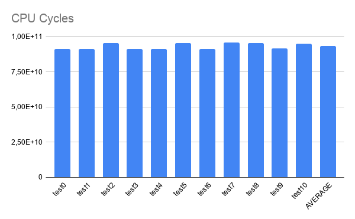
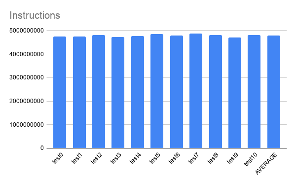
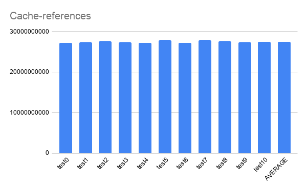
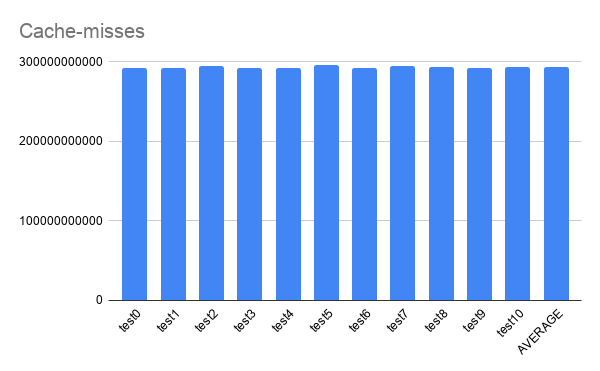
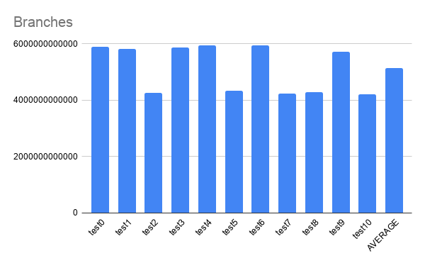
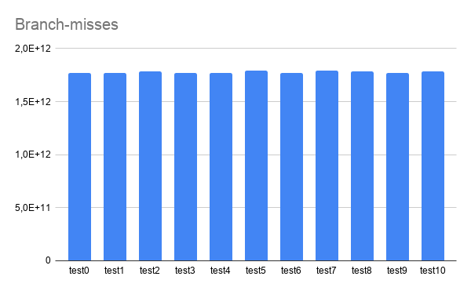
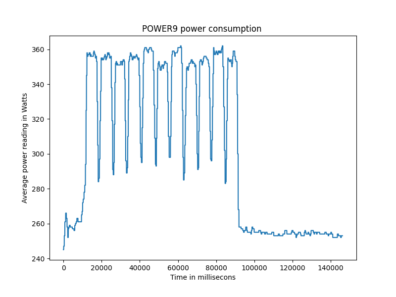

Although there is plenty information on AI profiling for x86_64 and ARM architectures, there is almost none on POWER.
With that motivation in mind, this post aim to share some results on this subject.
The program profiled was a python script that had a pre-trained ResNet50 with ImageNet weights, which was obtained from TensorFlow API.
It aimed to classify 500 hot-dogs images downloaded from the ImageNet.
The profiling was done using Perf for collecting PMU data and ipmitool for energy consumption data.
Requirements for the pyhton script:
- Bare-metal machine
- ipmitool
- python 3.6
- TensorFlow 2.1.1
Machine Stats:
- POWER9 Processor
- CPU(s): 128
- On-line CPU(s) list: 0-127
- Thread(s) per core: 4
- Core(s) per socket: 16
- Socket(s): 2
- NUMA node(s): 2
- Model: 2.2
You can find information on how to install TensorFlow on POWER in this post: https://openpower.ic.unicamp.br/post/building-tensorflow-on-power/
Eleven tests were executed.
from tensorflow.keras.applications.resnet50 import ResNet50
from tensorflow.keras.preprocessing import image
from tensorflow.keras.applications.resnet50 import preprocess_input, decode_predictions
import numpy as np
import sys
import time
from datetime import datetime
begin = time.time()
#folder = sys.argv[1]
length = 731
length = int(sys.argv[1])
if (length > 731):
print("Using maximum length: 731")
lenght = 731
again = int(sys.argv[2])
folder_name = "hot_dog"
model = ResNet50(weights='imagenet')
images = []
count = 0
for i in range(length):
img_path = folder_name + '/' + str(i) + '.jpg'
img = image.load_img(img_path, target_size=(224, 224))
images.append(image.img_to_array(img))
images[i] = np.expand_dims(images[i], axis=0)
images[i] = preprocess_input(images[i])
for j in range(again):
for i in range(length):
prediction = model.predict(images[i])
#print(decode_predictions(prediction[i], top=1)[0][0][1])
strPrediction = decode_predictions(prediction, top=1)[0][0][1]
if (strPrediction == 'hotdog'):
count += 1
else:
#print(str(i) + " -> " + strPrediction)
pass
print("Begin: " + datetime.utcnow().strftime("%H:%M:%S"))
print("End: " + datetime.utcnow().strftime("%H:%M:%S"))
print("RIGHTS: {}".format(count))
print("WRONGS: {}".format(again*length - count))
print("ACC: {}".format(count/(again*length)))
print("Time Elapsed: {}s".format(time.time() - begin))
Because the model is pre-trained, it obtained the same classification accuracy for every test.
RIGHTS: 433
WRONGS: 67
Profiling using perf.
Perf is a profiling program included with the Linux kernel. Here it was used to instrument CPU performance counters.
PMUs used:
branches,
branch-misses,
cache-misses,
cache-references,
cycles,
instructions,
idle-cycles-backend,
idle-cycles-frontend.
The following graphs shows the data fetched from those PMUs.
Graphs:
CPU Cycles:

Instructions:

Cache-references:

Cache-misses:

Branches:

Branch-misses:

Time Elapsed:

Energy consumption.
Make sure you are running on a bare-metal machine.
How to use the ipmitool to get power consumption data: Install ipmitool through:
sudo apt-get install ipmitool
Then run the command:
sudo ipmitool dcmi power reading
Which is going to give you the output:
Instantaneous power reading: 262 Watts
Minimum during sampling period: 248 Watts
Maximum during sampling period: 263 Watts
Average power reading over sample period: 257 Watts
IPMI timestamp: Sun Nov 8 19:51:18 2020
Sampling period: 00000005 Seconds.
Power reading state is: activated
This command was executed continuosly for 1500 seconds using a python script that would parse the results into a csv file.
Altough the sampling period was used for reference in order to plot the following graph, it does not represent an accurate time series in the x axis. For a better undertanding of power consumption profiling on POWER with ML algorithms, see the following post: https://openpower.ic.unicamp.br/post/power-consumption-on-power/
That said, the data was used to plot the following graph:

It is possible to see the average of energy consumption for each test and, at the end, the energy consumption going back to a normal state. It can also be observed that there is an increase close to 100W when a test begins to run.